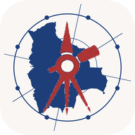

GeoDevelopment Observatory of Bolivia
A public-access platform for analyzing, monitoring, and evaluating sustainable regional development in Bolivia, from departments and provinces to municipalities, cities and grid cells. It brings together social, economic, and environmental indicators from satellite imagery, censuses, and administrative records; makes them explorable through notebooks and web apps; and turns the results into accessible insights.
GeoDevelopment Indicators
- SDG indicators of the Municipal Atlas of the SDGs 2020 (339 municipalities, 2010–2020)
- Night-time lights per capita (339 municipalities, 2012–2020)
- Population (339 municipalities, 2001–2020)
- Satellite embeddings (339 municipalities, 2017)
GeoDevelopment Tools and Insights
Python packages, notebooks, an Earth Engine app and research papers. See the GitHub repository.